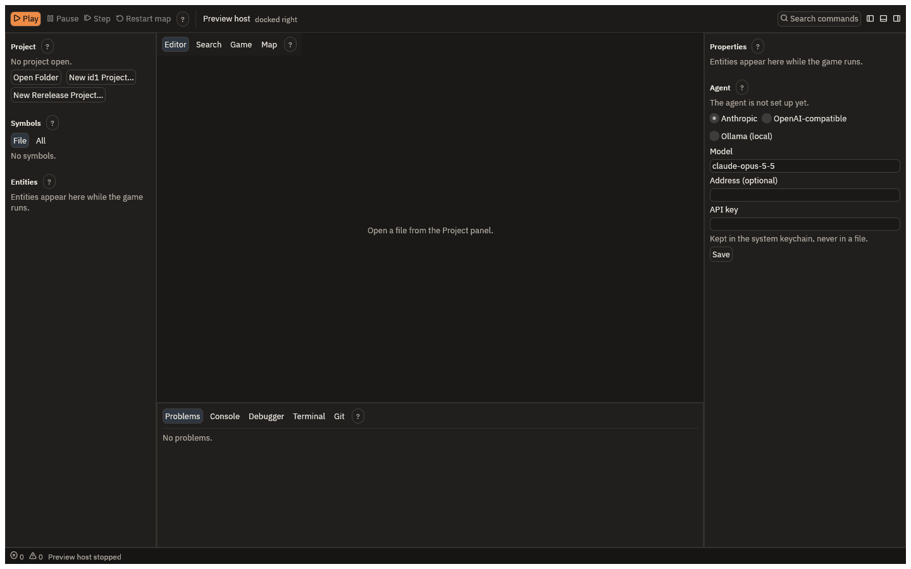

Getting started
This page takes you from nothing to a mod of your own running in Quake, with a change you made in it. It takes about ten minutes.
1. Have Quake
QuakeC Studio does not include Quake's game files. You need your own copy: the original game or the 2021 rerelease, from Steam or GOG. The shareware episode works for the first episode only. Your Quake game data says what each version holds and how to get the game onto a Mac, where the stores sell only the Windows version.
The IDE reads the game where it is installed and never copies it.
2. Start QuakeC Studio
If you have not installed QuakeC Studio yet, Install says how on macOS, Windows and Linux.
Start the app. The window has the toolbar at the top, the Project and Entities panels on the left, the editor in the centre, Properties and the agent on the right, and Problems, Console and Debugger at the bottom. With no project open, the editor shows the Welcome page: it says whether the app found Quake, and offers to start a project.

3. Make a mod from a starter
With no project open, the Welcome page and the Project panel offer New Project… and Open Folder. On macOS the same are in the File menu.
New Project… asks Which game is the mod for?
- Original Quake starts from id's QuakeC 1.01, the original game's code.
- Quake rerelease (2021) starts from the rerelease's QuakeC, for Quake's 2021 rerelease.
It chooses the game your Quake folder holds to begin with. Press Choose Folder… and name a new, empty folder. Its name is your mod's name. The IDE downloads the starter's files from GitHub, at a pinned version, checks each one, and opens the new project. This is the only time getting started uses the network.
The new folder holds the starter's QuakeC and some files of its own:
quakec.toml, which says the project's dialect and the engine it targets;tests.qc, with a sample unit test, andtests/start.scenario, a sample test played in the game;.gitignore, which keepsbuild/, the compiler's output, out of git;COPYINGandNOTICE.md, the starter's license and where the code came from.
From the command line, quakec-ide new id1 <folder> does the same.
4. Play it
Press Play on the toolbar. The IDE builds the mod, and if it finds the game it starts it
in its own window, docked beside the IDE, on start, the map you begin Quake on.
If the IDE cannot find your game, it shows Choose your Quake folder. It says what the
folder it looked at holds and lacks. Press Choose folder and pick the folder that holds
id1. The IDE remembers it.
5. Change something
In the Project panel, open weapons.qc. Find W_FireAxe, the axe's attack, and the damage
line in it:
T_Damage (trace_ent, self, self, 20);
Change 20 to 200 and save with Cmd+S. The running game reloads the new code at once,
without restarting the map. Hit a monster with the axe (type impulse 1 in the game's console,
or press 1, to pick it): a grunt or a dog that took several blows now falls to one.
If the change has a mistake, the Problems tab lists it with its file and line, the toolbar says The reload failed; see the Console, and the game keeps running the code it had.
6. Run the tests
Open the command palette with Cmd+Shift+P, type test and choose project.test, Builds
the open project and runs its tests. The project's tests are its test_ functions and its
tests/*.scenario files. A new project has one of each, and both pass.
From the command line, quakec-ide test <folder> runs them too.
Next
- The play loop says more about Play, Pause, Step and reloading.
- The agent shows how to ask the agent for a change like the one above.